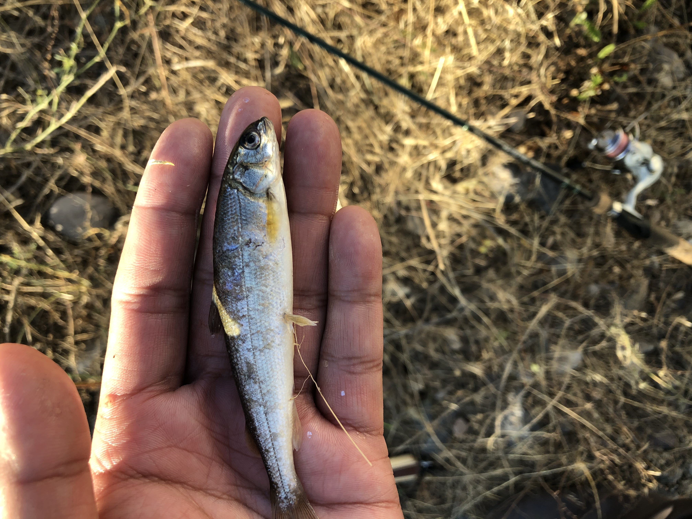

Spinning Tackle Fishermen


Being equally effective in these waters. The spinning tackle offers better mobility where the fly rods would need more room. Being easier for beginners, this way of fishing is just as fun.
The key to being successfully with tackle gear is to match the bait fish. Lures like jerkbaits and spinner work really well as long as it is the right color.
Simple worm, hook, and sinker also works but only in calm waters.
Match the hatch:
Mountain White fish
Found in abundance, all through the Snake river, the color that can never go wrong on your lures is the trusty black and silver.
Whether it is as a jerk bait or as a spinner. The slow retrieve with an occasional small jerk, imitating a injured fish, has always proven to be successful.
Brown trout

Using targeted fish colors works as trouts are predatory fish and will feed on spawns. So whether it is brown trout, rainbow trout, or cutthroat. If you match your colors there will be success.
Just remember larger lures catches bigger fish but not as many fish. Aim for smaller presentations around 2 1/4 inches for best results.
Get out there and have some fun!